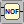
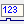

EN-poort
EN-poortVerwerkingsonderdelen nemen signalen van de invoer, bewerken ze en geven het resultaat door aan de uitvoer.
Een poort heeft ingangen links en een uitgang rechts.
EN-poortDe uitgang is alleen aan als beide ingangen aan zijn.
| Ingang A1 | Ingang A2 | Uitgang A |
|---|---|---|
| 0 | 0 | 0 |
| 0 | 1 | 0 |
| 1 | 0 | 0 |
| 1 | 1 | 1 |
 OF-poort
OF-poortDe uitgang is aan als minstens één ingang aan is.
| Ingang O1 | Ingang O2 | Uitgang O |
|---|---|---|
| 0 | 0 | 0 |
| 0 | 1 | 1 |
| 1 | 0 | 1 |
| 1 | 1 | 1 |
 NIET-poort
NIET-poortEén ingang; de uitgang is het omgekeerde van de ingang.
| Ingang N1 | Uitgang N |
|---|---|
| 0 | 1 |
| 1 | 0 |
 NEN-poort
NEN-poortHet omgekeerde van een EN-poort (niet-en): de uitgang is alleen uit als beide ingangen aan zijn.
| Ingang A1 | Ingang A2 | Uitgang A |
|---|---|---|
| 0 | 0 | 1 |
| 0 | 1 | 1 |
| 1 | 0 | 1 |
| 1 | 1 | 0 |

NOF-poortHet omgekeerde van een OF-poort (niet-of): de uitgang is alleen aan als beide ingangen uit zijn.
| Ingang O1 | Ingang O2 | Uitgang O |
|---|---|---|
| 0 | 0 | 1 |
| 0 | 1 | 0 |
| 1 | 0 | 0 |
| 1 | 1 | 0 |
 EX-OF-poort
EX-OF-poortExclusieve of: de uitgang is aan als precies één ingang aan is. Zijn beide ingangen gelijk, dan is de uitgang uit. Met een EN-poort erbij maak je een halve opteller.
| Ingang X1 | Ingang X2 | Uitgang X |
|---|---|---|
| 0 | 0 | 0 |
| 0 | 1 | 1 |
| 1 | 0 | 1 |
| 1 | 1 | 0 |
In de schemasymbolen (IEC en ANSI) herken je de NEN- en NOF-poort aan het bolletje (omkering) aan de uitgang. De EX-OF-poort heeft in IEC het teken =1 en in ANSI een extra boog aan de ingangen.
 Flipflop
FlipflopEen flipflop onthoudt één bit: de uitgang Q blijft 0 of 1, ook als de ingangen weer uit gaan. De tweede uitgang Q̅ (niet-Q) is altijd het omgekeerde van Q. Met de rechtermuisknop kies je de soort (het blok mag niet vergrendeld zijn). Een nieuwe flipflop begint met Q = 0.
| Soort | Ingangen | Wat doet hij? |
|---|---|---|
| SR | S R | S (set) zet Q op 1, R (reset) zet Q op 0. Zijn S en R samen aan, dan is dat eigenlijk verboden: in Logic gaat R voor. |
| D | D C | Op het moment dat de klok C aangaat, neemt Q de waarde van D over. Daarna mag D veranderen zonder dat Q mee verandert. |
| JK | J C K | Op het moment dat C aangaat: J en K uit = Q blijft, J aan = Q wordt 1, K aan = Q wordt 0, J en K samen aan = Q wisselt. |
| T | T | Elke keer dat T aangaat, wisselt Q (toggle): 0, 1, 0, 1, … |
De klokingang C heeft een driehoekje in het blok. De flipflop reageert alleen op het aangaan van C (de flank), niet zolang C aan blijft. Probeer het in les 27.
Zet eerst de voeding klaar zoals in les 1: bron, + rail en − rail.
Voor elk voorbeeld klik je op Flipflop (in de balk vanaf het
niveau Uitgebreid), zet je hem midden op het paneel en kies je met de rechtermuisknop de soort.
De ingangen zet je links, naast de + rail: neem de  schakelaar
uit de groep Voeding; met rechtsklik › Soort › Drukknop wordt het een drukknop.
De lampen zet je rechts, bij de − rail: neem een
schakelaar
uit de groep Voeding; met rechtsklik › Soort › Drukknop wordt het een drukknop.
De lampen zet je rechts, bij de − rail: neem een  lamp met twee klemmen
voor 5 V (rechtsklik › Spanning van de lamp › Lamp voor 5 V (ook aan een poort)).
Verbind alles met
lamp met twee klemmen
voor 5 V (rechtsklik › Spanning van de lamp › Lamp voor 5 V (ook aan een poort)).
Verbind alles met  Verbinding
(zie Verbindingen) en start daarna de simulatie.
Verbinding
(zie Verbindingen) en start daarna de simulatie.
Wat zie je? Druk kort op “alarm”: de lamp gaat aan en blijft aan als je loslaat. Pas met “reset” gaat ze weer uit. Zo onthoudt een alarm dat een deur even open was. Dit voorbeeld staat uitgewerkt in les 27.
Wat zie je? Zet de schakelaar aan: de lamp blijft uit. Pas als je op de drukknop drukt, neemt Q de stand van de schakelaar over en gaat de lamp aan. Zet de schakelaar weer uit: de lamp blijft branden tot je opnieuw drukt. De D-flipflop maakt dus een “foto” van D op het moment van de klok. Zo bewaart een computer een bit in zijn geheugen: D zegt wat, de klok zegt wanneer.
Wat zie je? Kies een stand van J en K en druk dan op de drukknop. Er gebeurt pas iets bij die druk:
| J | K | Na een druk op de drukknop (C) |
|---|---|---|
| 0 | 0 | Q blijft zoals hij was |
| 1 | 0 | Q wordt 1: de lamp gaat aan |
| 0 | 1 | Q wordt 0: de lamp gaat uit |
| 1 | 1 | Q wisselt bij elke druk: aan, uit, aan, … |
De JK-flipflop kan dus alles: onthouden, zetten, wissen en wisselen. Met J en K allebei aan werkt hij als een
T-flipflop. Zet je een NIET-poort van J naar K
(K is altijd het omgekeerde van J), dan werkt hij als een D-flipflop met J als D.
Wat zie je? Bij elke druk wisselt de lamp: de eerste druk aan, de tweede uit, de derde weer aan, …
Zet je een  impulsgenerator tussen de + rail en T in
plaats van de drukknop (klik op zijn kastje om hem te starten), dan knippert de lamp half zo snel als de impulsen: de T-flipflop deelt door twee.
impulsgenerator tussen de + rail en T in
plaats van de drukknop (klik op zijn kastje om hem te starten), dan knippert de lamp half zo snel als de impulsen: de T-flipflop deelt door twee.
 Tellerblok
TellerblokTelt de pulsen op zijn telingang en geeft de stand binair door op vier uitgangen.
| Aansluiting | Betekenis |
|---|---|
| Te | Telingang: bij elke puls gaat de teller één stap verder. |
| Re | Reset: zet de teller terug op 0. |
| 8 4 2 1 | De stand van de teller als binair getal (0 tot 15). |
Sluit de uitgangen aan op lampen (elke lamp met een draad naar de − rail) of op een display om de stand te zien. Een drukknop of impulsgenerator tussen de + rail en de telingang laat de teller lopen.

StappentellerTelt pulsen in het tientallig stelsel en toont de stand zelf op een display van vier cijfers (0 tot 9999). Handig om stappen, pakjes of rondjes te tellen, bijvoorbeeld van 1 tot 1000.
| Aansluiting | Betekenis |
|---|---|
| T | Telingang: bij elke puls gaat de stand één omhoog. |
| R | Reset: zet de stand terug op 0. Zolang R aan is, telt de teller niet. |
| Q | Uitgang: aan zolang de eindwaarde bereikt is, bijvoorbeeld naar een lamp, een zoemer met twee klemmen of een ingang van LogicRun. |
Met de rechtermuisknop (het blok mag niet vergrendeld zijn) kies je de eindwaarde: 10, 100, 1000, 9999 of een ander getal. Bij de eindwaarde blijft de teller staan. Zet je Herhalen aan, dan begint hij bij de volgende puls weer bij 1; zo telt hij steeds van 1 tot de eindwaarde. Met Op 0 zetten zet je de stand met de hand terug. De stappenteller is verwerking: hij heeft geen voeding nodig.
Meet de tijd in minuten en seconden en toont ze op een display (MM:SS, tot 99:59). Met de uitgang Q schakel je iets na een ingestelde tijd: een lamp die na 30 seconden aangaat, een motor die 1 minuut draait ...
| Aansluiting | Betekenis |
|---|---|
| S | Start: de tijd loopt zolang S aan is. Gaat S uit, dan blijft de tijd staan (pauze); gaat S weer aan, dan loopt hij verder. |
| R | Reset: zet de tijd terug op 00:00. Zolang R aan is, loopt de tijd niet. |
| Q | Uitgang: aan zodra de eindtijd bereikt is. |
Met de rechtermuisknop (het blok mag niet vergrendeld zijn) kies je de eindtijd: 00:10, 00:30, 01:00, 05:00, 10:00 of een andere tijd (als mm:ss, bijvoorbeeld 02:30). Bij de eindtijd blijft de stopwatch staan. Zet je Herhalen aan, dan begint hij daarna weer bij 00:01: Q geeft dan elke keer na de eindtijd een seintje van een seconde. De dubbelpunt knippert zolang de tijd loopt. De stopwatch is verwerking: hij heeft geen voeding nodig.
 Geheugenblok
GeheugenblokEen geheugen met 32 geheugenplaatsen (adres 0 tot 31). Elke plaats bewaart een getal van 0 tot 15. Bij het plaatsen staat overal 0.
Links heeft het geheugen de data-ingangen D8, D4, D2 en D1 en de schrijfingang S. Zet het getal op de data-ingangen (bijvoorbeeld met een dipschakelaar) en geef een puls op S (een drukknop): op het moment dat S aan gaat, komt het getal in het gekozen adres.
| Aansluiting | Betekenis |
|---|---|
| A 8 4 2 1 | Adresingangen bovenaan: kiezen binair de geheugenplaats. |
| Ingang A16 | De vijfde adresingang (linksboven, naast A8) telt 16 bij het adres op, voor de plaatsen 16 tot 31. Het gekozen adres staat in het blok (ADRES = …). |
| D8 D4 D2 D1 S | Data-ingangen en schrijfingang links: verbind D8 tot D1 met de uitgangen 8, 4, 2 en 1 van een dipschakelaar (zijn linkse klem aan de + rail) en zet een drukknop tussen de + rail en S. Druk je op de drukknop, dan wordt het getal op het gekozen adres bewaard. |
| G 8 4 2 1 | De inhoud van de gekozen geheugenplaats als binair getal, onderaan. |
Het geheugenpaneel toont een uitgewerkt voorbeeld met een teller als adres en displays voor adres en inhoud.